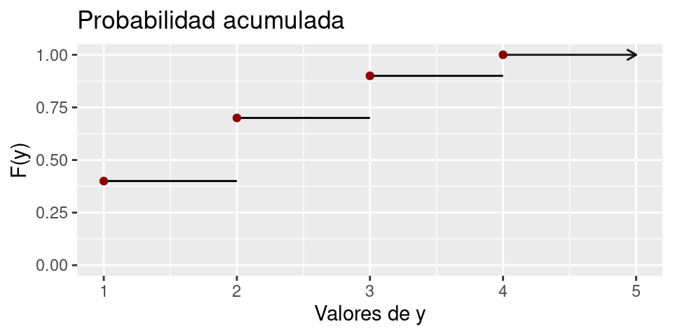

Unidad 1 Tópicos básicos de estadística
1.1 Conceptos
En esta sección repasaremos algunos conceptos claves de la estadística que están asociados a las ciencias cognitivas. Luego, se ahondará en las técnicas estadística básicas de visualización y tabulación de datos, para el estudio de estos.
1.1.1 Datos
El dato es la unidad básica de la estadística. Esta unidad es cualquier evento o hecho que no ha sido dotado de significado, es decir, un hecho del cual no se puede dar interpretación alguna (Brachman and Levesque 2004).
Un ejemplo de este concepto, es cuando tratamos de responder la pregunta ¿por qué nos detenemos al caminar al encontrarno con un semáforo en rojo? ¿Cuál es el dato? ¿Cuál es el significado?
1.1.2 Información
Por otro lado, los datos existen independiente de quien observa, y cuando una persona adquiere datos y los dota de significado, estos se convierten en información (Brachman and Levesque 2004). Otra forma de entenderlo es:
En el ejemplo anterior, el decodificador es la persona que va caminando, y el significado (reglas para decodificar) que le damos al semáforo al estar en rojo, viene de las reglas sociales que indican como actuar en determinadas situaciones.
En estadística, mediante el uso de distintas herramientas (gráficos, tablas, entre otras), dotaremos de significado a los datos, para así generar información de utilidad en distintos fenómenos de estudio.
1.1.3 Tipos de variables
El concepto de datos está fuertemente ligado a su naturaleza, es decir, el contexto de estudio que que los rodea. En este sentido, los datos están asociados a lo que llamamos variable (“naturaleza del dato”, “los tipos de valores que adquiere el dato”), las cuales, se pueden clasificar la siguiente manera (Anderson, Sweeney, and Williams 2008, página 7):
- Cualitativas (Nominales y Ordinales): variables no numéricas que pueden o no llevar un orden, respectivamente.
- Cuantitativas (Discretas y Continuas): variables numéricas que pueden o no ser enumeradas, respectivamente.
Ejemplo: Determinar la clasificación de las siguientes variables: tiempo, dinero, altura, cantidad de vecinos en el lugar donde vivo, grado de conformidad (conforme, medianamente conforme, nada conforme) respecto a un servicio, color de pelo de un grupo de personas.
1.1.4 Población y Muestra
Los ingenieros y científicos constantemente están expuestos a la recolección de hecho o datos, tanto en sus actividades profesionales como en sus actividades diarias. La disciplina de estadística proporciona métodos para organizar y resumir datos y de sacar conclusiones basadas en la información contenida en datos.
Una investigación típicamente se enfocará en una colección bien definida de objetos que constituyen una población de interés. Cuando la información deseada está disponible para todos lo objetos de la población, se tienen lo que se llama un censo. Las restricciones de tiempo, dinero y otros recursos escasos casi siempre hacen que un censo sea infactible. En su lugar, se selecciona un subconjunto de la población, una muestra, de manera prescrita (Devore 2008, paǵina 2).
- Población: La población es el conjunto de todos los sujetos de interés en un estudio.
- Muestra: La muestra es un subconjunto de la población a través de los cuales el estudio recoge los datos.
A continuación, determine la población y muestra de los siguientes enunciados:
- Se realiza un sondeo para determinar los rubros con mayor inflación de venta de mercado en Santiago, para ello se estudia el rubro con mayor ingreso líquido de ventas, en algunas de las comunas de Santiago.
- La encuesta ENUSC elabora anualmente un informe respecto a la seguridad ciudadana, para ello, se contacta a una cantidad de personas determinadas de cada región del país, dando así, resultados a nivel nacional y regional.
1.1.5 Parámetros y Estadísticos
Ambos conceptos están fuertemente ligados a los de población y muestra de la siguiente manera (Anderson, Sweeney, and Williams 2008, página 83):
- Parámetros: corresponde a una característica de resumen de la población.
- Estadísticos: corresponde a una característica de resumen de la muestra.
En la figura 1.1 se observa un ejemplo de círculos rojos y azules tanto para la población como para una muestra de esta. Dado que la población contiene todos los datos (censo), es posible apreciar todos los círculos con sus colores. Por otro lado, la muestra es solo una pequeña parte de la población, es decir, seleccionan algunos de los círculos al “azar” con sus respectivos colores.
Un ejemplo de los conceptos explicados es la proporción de círculos rojos. En caso de que estuviésemos interesados en dicha característica en la población, se hablaría de un parámetro, mientras que, si se está interesado en la muestra se hablaría de estadístico.

Figura 1.1: Parámetro y estadístico
1.1.6 Estimador y Estimación
Una extensión de los conceptos de parámetro y estadístico, son los de estimador y estimación, para los cuales, se hace la siguiente distinción:
Estimador: Un estimador es un estadístico usado para aproximar (incertidumbre) el valor de un parámetro. Usualmente no cambia la técnica entre la población y la muestra, por ejemplo, si deseo aproximar la proporción de bolitas rojas en la población, se usaría la proporción de bolitas rojas en la muestra.
Estimación: Una estimación es el número que resulta de aplicar el estimador a una muestra particular. Esto difiera levemente de la definición anterior, ya que en términos estrictos, el estimador solo es la “fórmula”, y la estimación es el valor resultante al aplicar la fórmula. Sin embargo, hoy en día es muy común encontrar textos en donde el estimador se considera tanto para la fórmula como para el valor obtenido.
Si consideramos un ejemplo similar al anterior (Figura 1.2), y establecemos que el parámetro a estudiar es la proporción de círculos rojos, es natural pensar que en la muestra (estadístico) el comportamiento debería ser similar. La intención de decir “usaremos la proporción de círculos rojos en la muestra para deducir como es la proporción de círculos rojos en la población” corresponde al estimador (otro tema es argumentar si esto es correcto o no), mientras que, el cálculo del estimador (cálculo de la proporción de círculos rojos en la muestra) lleva el nombre de estimación.
Respecto a lo anterior:
- ¿Cuál sería la estimación de los círculos rojos?
- Si observamos la muestra de la figura 1.1 y 1.2, ¿cuándo diríamos que una estimación es buena?

Figura 1.2: Estimador y estimación
1.1.7 Variabilidad muestral
Efectivamente, la estimación de un parámetro está determinada por la muestra con la que se trabaja. La forma en la que se elige una muestra es azarosa (que no se puede intencionar en su totalidad), por lo que es imposible saber de antemano si la estimación será buena o mala respecto al parámetro (error de estimación). En estadística, la forma en la que se elige o genera una muestra puede llegar a ser muy compleja, siendo un tema que está fuera del alcance de este curso.
El concepto detrás de esto es la variabilidad muestral, el cual, indica que dependiendo de la muestra que se obtenga de la población, esta se comportará distinto en relación al estadístico (igualmente para el valor del estimador: estimación). Para ilustrar esto, observemos la figura 1.3.

Figura 1.3: Población
Luego,

Figura 1.4: Muestra 1
Figura 1.5: Muestra 2
Efectivamente, diferentes muestras se comportan de manera diferente, es decir, la estimación depende de la selección de la muestra. Esto se denomina como variabilidad muestral.
1.1.8 Representatividad y sesgo de la muestra
Ambos conceptos se usan con frecuencia en la vida cotidiana, y a su vez están mal empleados. El sesgo no es una propiedad de la muestra sino que del estimador (concepto avanzado de estadística).
Por otro lado, la representatividad no es un concepto válido matemáticamente (no existe tal definición).
1.1.9 Medidas de localización
Los resúmenes visuales de datos son herramientas excelentes para obtener impresiones y percepciones preliminares, Un análisis de datos más formal a menudo requiere el cálculo e interpretación de medidas de resumen numéricas. Es decir, de los datos se trata de extraer varios números resumidos, números que podrían servir para caracterizar el conjunto de datos.
Media
Para un conjunto dado de números \(x_1, x_2, x_3, \ldots, x_n\), la medida más conocida y útil es la media o promedio aritmético. Usualmente se asume que los números \(x_i\) hace parte de una muestra, por lo que a este promedio se le connota como media muestral y se denota con por \(\bar{x}\).
De lo anterior, la media muestral (\(\bar{x}\)) de una conjunto de datos \(x_1, x_2, x_3, \ldots, x_n\) está dada por (Devore 2008, página 25)
\[ \bar{x} = \frac{x_1 + x_2 + \cdots + x_n}{n} = \frac{\displaystyle\sum_{i=1}^{n}x_i}{n} \]
En R, para obtener el promedio aritmético de los datos se hace uso de la función mean(). A continuación, un ejemplo.
# Un conjunto de datos cualquiera
x = c(1,2,3,6,1,-4,-2,6,0,10,-20)
# Promedio de los datos
mean(x)## [1] 0.2727273El promedio (\(\bar{x}\)) representa el valor central de las observaciones incluidas en una muestra. Sin embargo, esta medida puede llegar a ser inapropiada en algunas circunstancias, específicamente cuando existen valores extremos. Un ejemplo de esto, es el promedio de los ingresos (el caso de Chile), ya que, es común que unos cuantos afortunados ganen cantidades astronómicas, por lo que el uso del ingreso promedio como medida de resumen puede ser engañoso (otro ejemplo, es la valorización de BitCoin al dólar estadounidense).
A pesar de lo anterior, esta medida sigue siendo ampliamente utilizada, en gran medida porque existen muchas poblaciones para las cuales un valor extremo en la muestra sería altamente improbable (ejemplo: tipo de cambio del dólar).
1.2 Gráficos descriptivos
La estadística descriptiva se divide en dos temas generales. En este apartado, se considera la representación de un conjunto de datos por medio de técnicas visuales. A continuación, se hará mención de algunas de las técnicas más útiles y pertinentes a la estadística de probabilidad. Para ello, usaremos la base de datos rock que viene incluida en R, la cual, contiene mediciones de 48 muestras de roca de un yacimiento de petróleo. Los las columnas de esta base son:
- area: área del espacio de poros, en píxeles de 256 por 256.
- peri: perímetro en píxeles.
- shape: perímetros dividido por la raíz cuadrada del área.
- perm: permeabilidad en mili-Darcies (unidad que se utiliza para cuantificar la capacidad de permeabilidad de un fluido a través de una roca; más información en este link).
1.2.1 Histograma
Algunos datos numéricos se obtienen contando para determinar el valor de una variable (cuántas veces se repite un hecho), mientras que otro datos se obtienen tomando mediciones (peso, altura, tiempo de reacción). Usualmente, este tipo de gráfico se utiliza con datos continuos (aunque tiene una versión para datos discretos), para lo cual, se debe hacer lo siguiente (Devore 2008, paǵina 12):
- Subdividir los datos en intervalos de clase o clases, de tal manera que cada observación quede contenida en exactamente una clase. Para esto, se hace uso de la regla de Sturges, la cual, consiste en calcular la expresión \(1+\log_2(n)\), aproximando hacia el entero más próximo, dónde \(n\) corresponde a la cantidad de datos (existen otra variedad de técnicas).
- Determinar la frecuencia y la frecuencia relativa de cada clase, es decir, cuántas observaciones hay en cada uno de los intervalos.
- Se marcan los límite de clase sobre el eje horizontal del plano cartesiano.
- Se traza un rectángulo cuya altura es la frecuencia absoluta (o relativa) correspondiente a cada intervalo de clase.
Para obtener el histograma en R, a partir de un conjunto de datos, se utiliza el siguiente código:
library(ggplot2)
datos = rock
ggplot(data = datos, aes(x = perm)) +
geom_histogram(color = "white", fill = "darkred", bins = 7) +
labs(title = "Histograma", x = "Permeabilidad (mD)", y = "Frecuencia")
1.2.2 Caja
Este gráfico se utiliza para evidenciar las medidas de posición conocidas como cuartiles.
ggplot(data = datos, aes(y = perm)) +
geom_boxplot(color = "black", fill = "darkred") +
labs(title = "Caja", x = "Permeabilidad (mD)", y = "Dispersión/Cuantiles") 
1.2.3 Violín
Gráfico utilizado para conocer la concentración de datos; es muy similar al histograma.
g = ggplot(data = datos, aes(x = 1, y = perm)) +
geom_violin(trim = F, alpha = 0.5, fill = "aquamarine3") +
labs(title = "Violín", x = "", y = "Permeabilidad (mD)") +
theme(axis.ticks.x = element_blank(),
axis.text.x = element_blank())
g
g + geom_boxplot(width = 0.1, color = "black",
alpha = 0.3, fill = "darkblue") +
stat_summary(fun = mean, geom = "point",
size = 1, color = "red")
1.2.4 Barras
Gráfico por excelencia para visualizar la frecuencia de variables cualitativas.
datos$Perm2 = ifelse(datos$perm > 500, "Mayor a 500", "Menor a 500")
ggplot(data = datos,aes(x = Perm2)) +
geom_bar(fill = "darkgreen") +
labs(title = "Barras", x = "Permeabilidad (mD)", y = "Frecuencia")
1.2.5 Dispersión
Gráfico que permite contrastar dos variables cuantitativas. En general, se usa para estudiar la asociación entre dos variables.
ggplot(data = datos, aes(x = peri, y = perm)) +
geom_point() +
labs(title = "Dispersión", x = "Perímetro (px)", y = "Permeabilidad (mD)")
ggplot(data = datos, aes(x = peri, y = perm)) +
geom_point() +
geom_line() +
labs(title = "Dispersión", x = "Perímetro (px)", y = "Permeabilidad (mD)")
1.3 Ejercicios
Desarrollar el Taller 1.